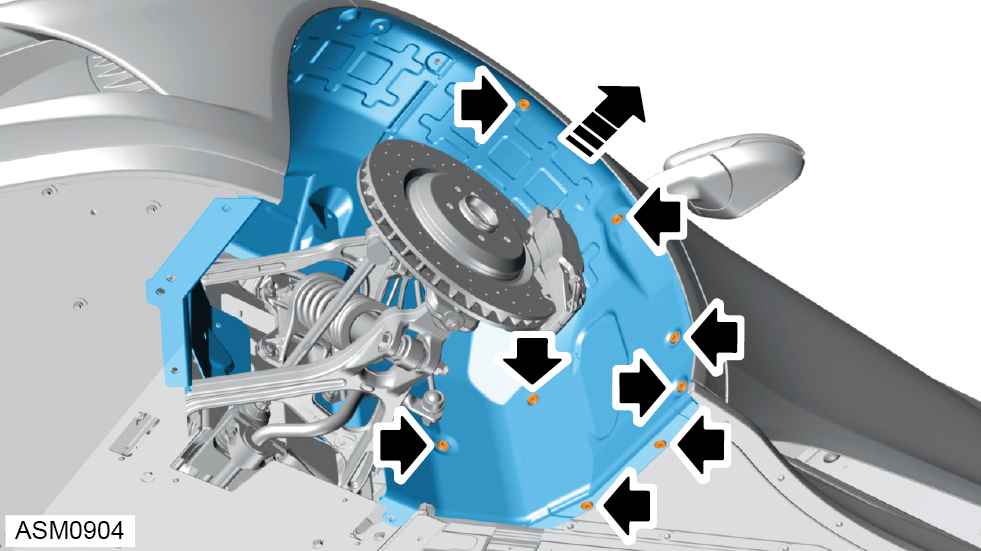

Wheelarch Liner - Front - Left Side
Print
Operation Code: 12.01.01-02
Removal
- Remove front road wheel left side. Refer to procedure.
- Remove M6x16 bolts (x2) and washers (x2) securing wheelarch liner to front undertray. Torque 9 Nm.
- Remove wheel arch liner front section scrivets (x10).
- Remove M6x35 pan head bolt and washer securing wheelarch liner to chassis. Torque 6 Nm.
- Remove M6x20 bolts (x2) and washers (x2) securing wheelarch liner to chassis.

- Remove wheel arch liner rear section scrivets (x8).
- Remove wheelarch liner from the vehicle.
Installation
- Installation is the reverse of removal procedure.